Your
Cleo product
provides
the ability to select local and/or partner certificates on a per trading partner basis that
can activated for use at a scheduled time in the future (or immediately, if
desired). Additionally, trading partners using non CEM-capable AS2 or AS3 protocols will
automatically be able to take advantage of the "first-usage" features for scheduled local
encryption certificates and scheduled partner signing certificates. See
.
To schedule new certificates for future use for one or more
trading partners:
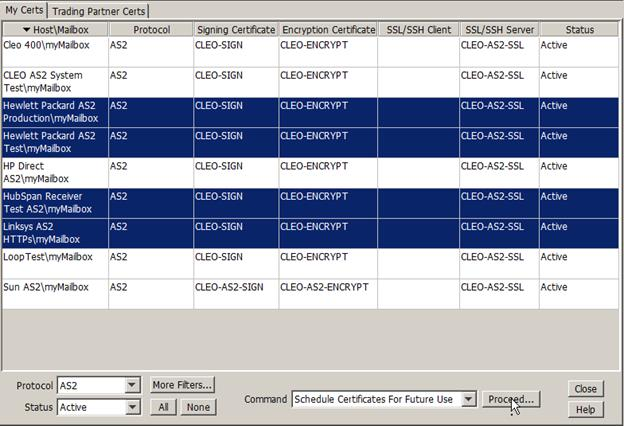
- Select the desired trading partner(s) on the My Certs or the
Trading Partner Certs panels.
- Select the Schedule Certificates For Future Use command
option.
- Click Proceed...
The following dialog box appears, allowing you to select and schedule new
certificates applicable for this trading relationship:
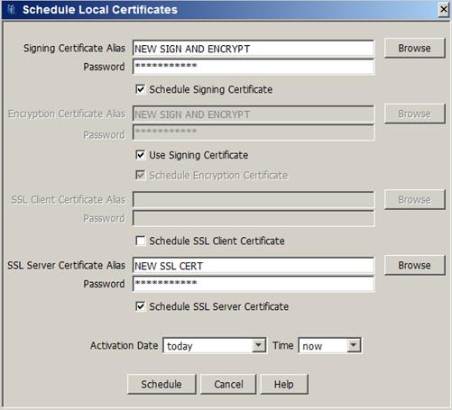
- Select the new certificate(s) by clicking Browse or by typing
the alias of the new certificate(s) directly in the specified Alias
fields.
- Add the correct private key password to the Password field.
- Select Use Signing Certificate to choose the same certificate
for Signing and Encryption or deselect this option to use different certificates for
Signing and Encryption.
- The SSL Client Certificate Alias and Password
fields will only be enabled if an SSL Client certificate had been previously selected
for the trading relationship. To override selection of these fields, Schedule
SSL Client Certificate may be selected or deselected as desired.
- The SSL Server Certificate Alias and Password
fields will only be enabled if the associated secure port for this protocol (in this
case HTTP/s) has been enabled in the Local Listener. To override selection of these
fields,Schedule SSL Server Certificate may be selected or
deselected as desired.
- Select the desired Activation Date and
Time from pull-down lists or specify your own date (in the
form: 'yyyy/mm/dd') and time (in the form: hh:mm or hh:mm:ss).
- Once all the desired new certificates for the trading relationship have been selected
and desired activation date and time has been chosen, click
Schedule to schedule the selected certificates for future use:
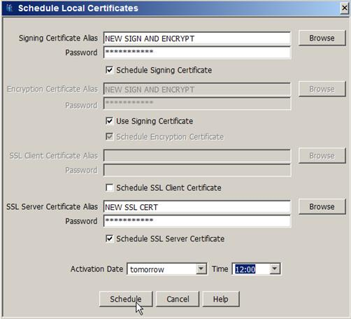
- The following confirmation dialog will be displayed allowing for final verification of
the certificates before the certificates are scheduled for activation:
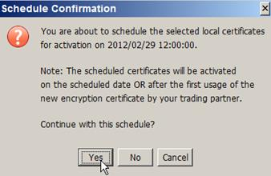
If you click Yes, all selected certificates will be
scheduled for installation and activation for the specified trading partner(s).
Clicking No brings you back to the previous 'Schedule Local
Certificates' panel allowing you the option of choosing either new certificates
and/or a new activation date/time.
- The status of the selected record(s) will be set to Scheduled and the option
to email the scheduled certificates to your trading partner(s) will be given:
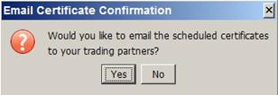
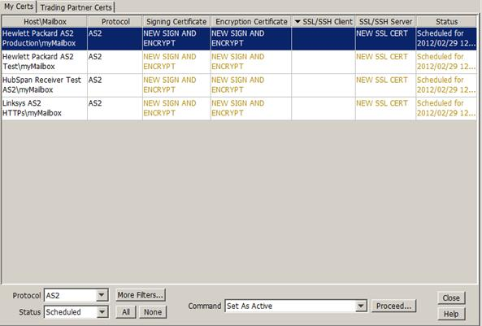
- The new certificates will be displayed in the panel with the current certificates and
will not be editable until after the scheduled certificate activation date and time has
elapsed or your trading partner begins encrypting with the new encryption certificate:
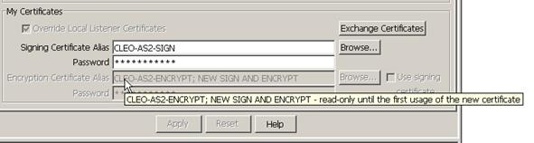
At that time, all previously scheduled certificates will be activated and an
email notification will be sent to the email address specified in the
Admin Email Address field on the Other tab in
Configure System Options panel. See
Other System Options.
- If a new SSL or SSH Server certificate was scheduled, the new certificate will be
displayed in either the Local Listener’s HTTP, FTP, OFTP or SSH FTP panel (depending on
the specified protocol) with the current certificate. Certificate
Alias will be read-only until all partners using the same SSL/SSH protocol
have scheduled the new certificate and that scheduled date has elapsed. Once this has
occurred, the new SSL/SSH Server certificate will automatically be installed (normally
within five minutes).
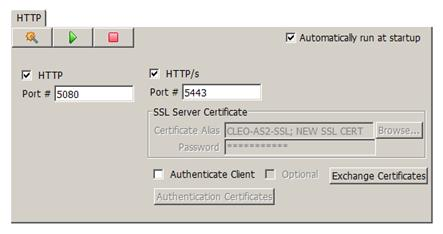
- Since only one HTTP, FTP, OFTP and SSH FTP server certificate can be active at any
time, the new server certificate relevant to the specified protocol will be the only
certificate that can be scheduled for all subsequent schedule requests for any other
protocols that use the same server certificate.
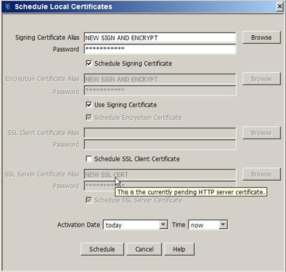
- If the server certificate was incorrectly scheduled and currently is in a read-only
state, it may be reverted by performing the following steps:
- Use More Filters… to quickly isolate all records using the
pending server certificate and click OK:
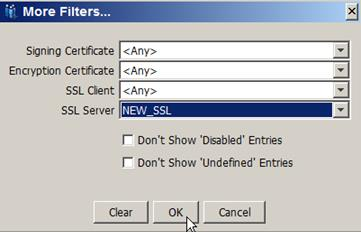
- Select those records and then choose Revert Pending SSL Listener
Cert.
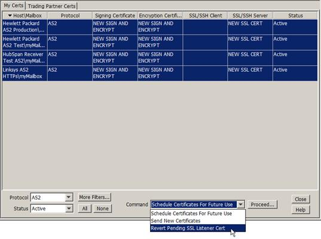
- Click Proceed…
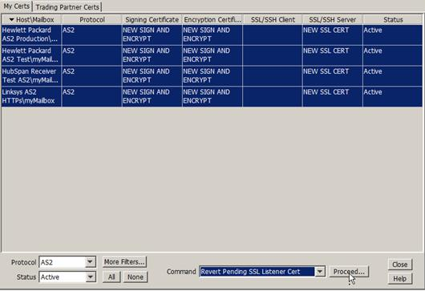
- The following confirmation dialog will be displayed:
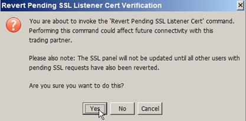
- The HTTP/s panel certificate is now reverted back to its original state:
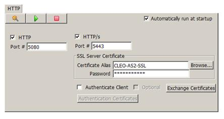